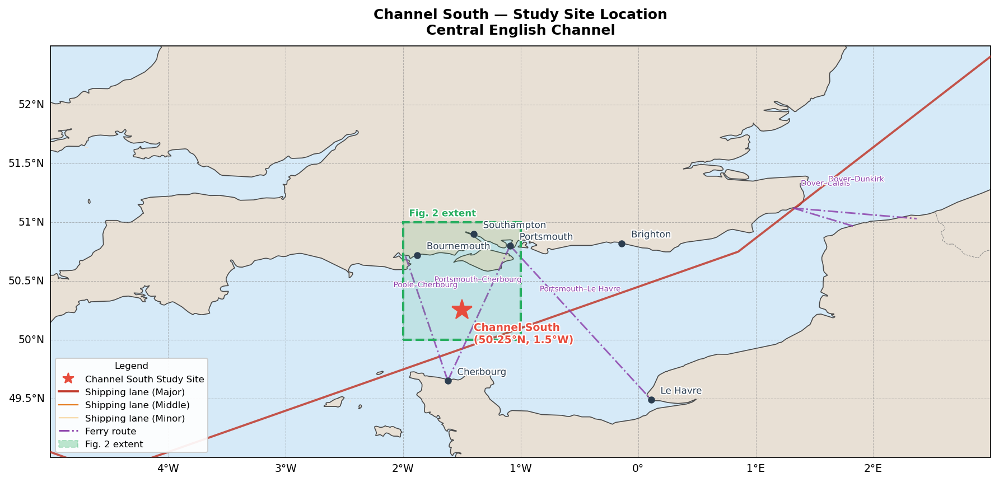
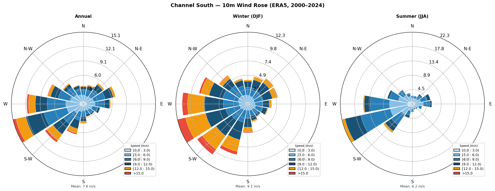
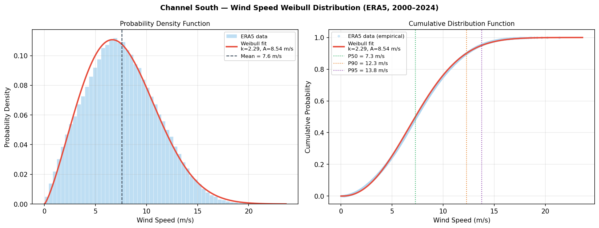
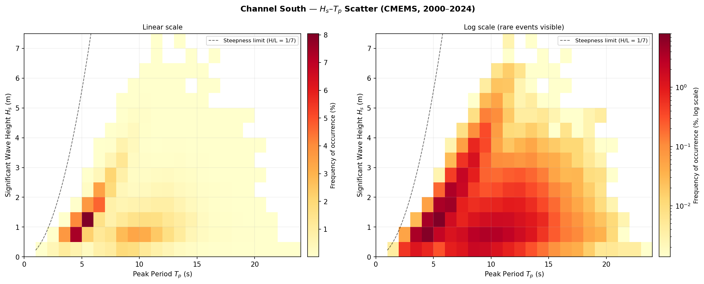
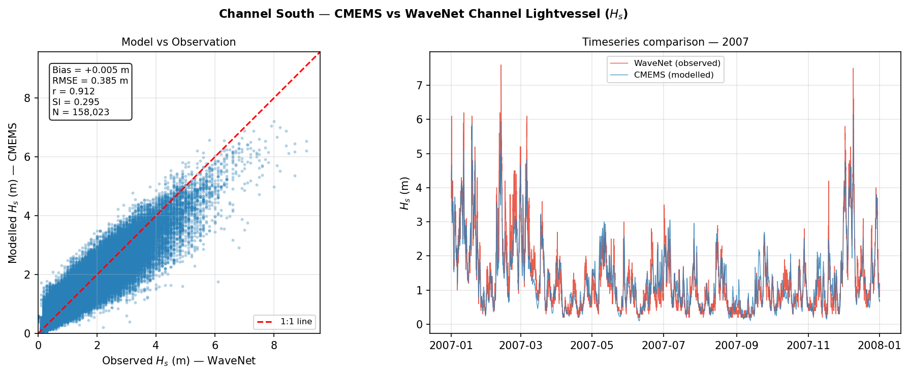
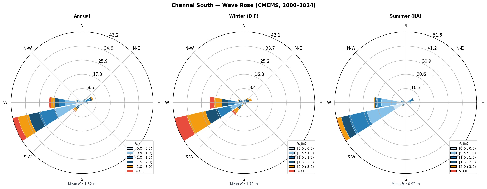
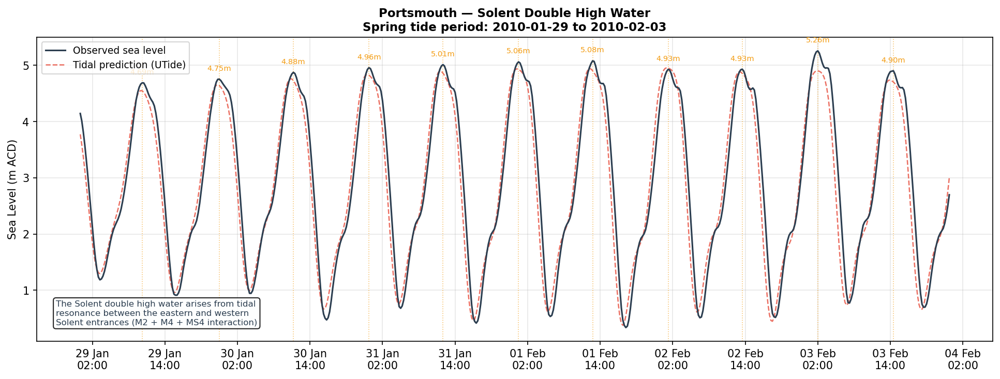
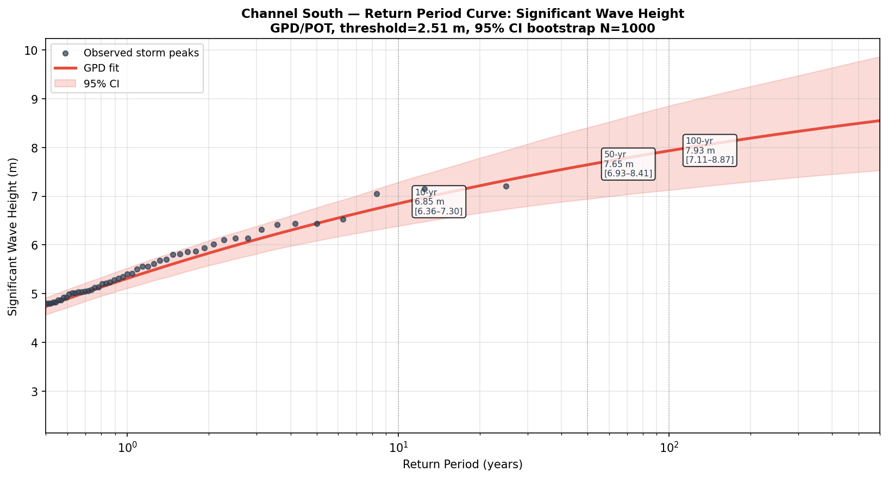

A full feasibility-stage metocean characterisation conducted independently, using open datasets and a reproducible Python pipeline. The site was chosen for its proximity to the Rampion offshore wind cluster and its technically interesting environment: mixed Atlantic swell and wind-sea wave climate, complex tidal regime including the Solent double high water, and challenging shallow-water bathymetry.
The study area is located in the central English Channel, approximately 20 km south of the Isle of Wight. This area is of direct relevance to offshore wind development, lying within the broader Rampion wind farm cluster and adjacent to the proposed extension zones in the English Channel. The region presents a technically challenging metocean environment: a mixed swell and wind-sea wave climate dominated by Atlantic swell from the southwest, complex tidal dynamics including the well-documented Solent double high water, and shallow-to-intermediate water depths (30–80 m).








| Dataset | Variable | Resolution | Period |
|---|---|---|---|
| ERA5 (Copernicus CDS) | 10 m wind speed & direction | 0.25° / 1 hr | 2000–2024 |
| CMEMS Global Wave Reanalysis | Hs, Tp, direction | 0.2° / 3 hr | 2000–2024 |
| CEFAS WaveNet | Hs, Tp (buoy obs) | In situ / hourly | Validation period |
| BODC Portsmouth | Sea surface elevation | In situ / 15 min | Multi-year |
| GEBCO 2023 | Bathymetry | 15 arc-sec global | n/a |
All analysis was conducted in Python with a fully reproducible pipeline version-controlled
on GitHub. Key libraries: xarray,
pandas,
scipy,
matplotlib,
cartopy,
UTide,
pyextremes,
windrose,
geopandas.
Data accessed programmatically via the Copernicus CDS API and CMEMS toolbox.
The report is structured to industry feasibility-study standards, covering site description, data sources and methodology, wind climate, wave climate, tidal analysis, extreme value analysis, and a marine operations weather window summary.